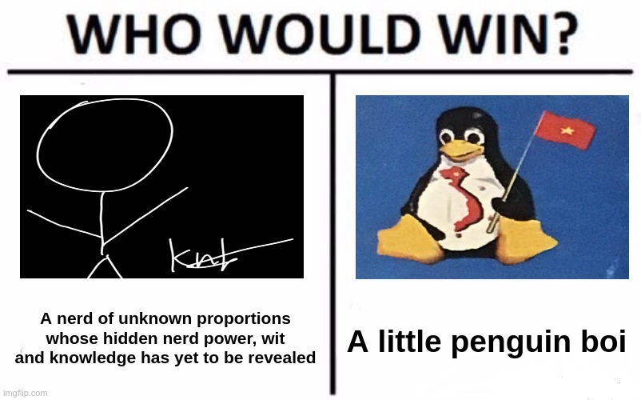
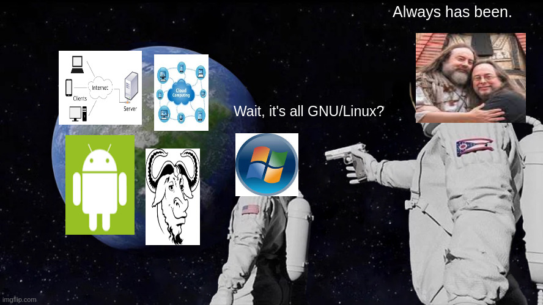

A
collection of
some of my *very
creative* memes
(don't rate these PLEASEEEEEEEE)

Iris wouldn't stop calling me "penguin" so this meme was born
sudo rm -rf --no-preserve-root /

Wait, it's all GNU/Linux?
Based on an actual sticky note I stuck on my classroom's
blackboard
"wHaT's liNuX AgAiN???"
Made by KNBnoob1 with <3

This page was made with RetroZilla 2.2's Composer tool as a
tribute to the many
highly creative websites of the 1990s and early 2000s.